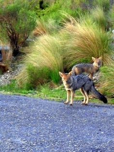
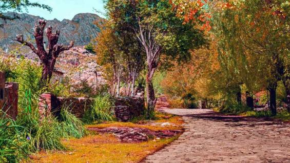
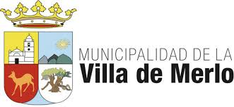
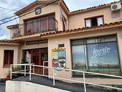

Ubicacion:
Merlo se encuentra ubicada en el valle de Conlara, faldeo occidental de las Sierras de los Comechingones. La distancia desde la Ciudad de Buenos Aires es de 780 kilómetros, en tanto que está a 450 km de la ciudad de Mendoza, a 250 km de la ciudad de Córdoba y a 190 km de la capital provincial, la ciudad de San Luis.




Secretaría de Gestión, Calidad y Productos Turísticos tiene la misión del diseño de políticas consistentes para generar actividades recreativas y fomentar la visita de personas en la Villa de Merlo. Para cualquier informacion se puede dirigir al municipio.